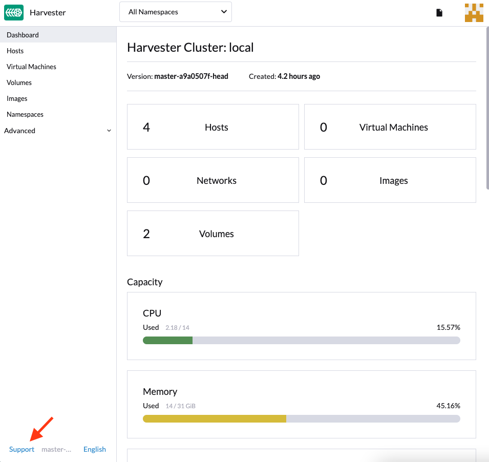

|
この文書は自動機械翻訳技術を使用して翻訳されています。 正確な翻訳を提供するように努めておりますが、翻訳された内容の完全性、正確性、信頼性については一切保証いたしません。 相違がある場合は、元の英語版 英語 が優先され、正式なテキストとなります。 |
クラスタの問題
HTTPプロキシ設定が不正なため、マルチノードクラスタのデプロイに失敗する
設定ファイルなしでの ISO インストール
インストール中にHTTPプロキシを設定する
一部の環境では、インストール中にhttp-proxyをOS環境に設定します。
最初のノードが準備できた後にHTTPプロキシを設定する
最初のノードが正常にインストールされた後、UIにログインしてhttp-proxyをシステム設定に設定します。
その後、クラスタにさらにノードを追加します。
1つのノードが利用できなくなる
遭遇する可能性のある問題：
The first node is installed successfully. The second node is installed successfully. The third node is installed successfully. Then the second node changes to Unavialable state and cannot recover automatically.
解決方法：
クラスタ内のノードが最初のノードが正常にインストールされた後にHTTPプロキシを使用して互いに通信しない場合、これらのノードが使用するCIDRに対してhttp-proxy.noProxyを設定する必要があります。
例えば、クラスタがCIDR 172.26.50.128/27 からノードにIPをDHCP/静的設定で割り当てる場合、このCIDRを`noProxy`に追加してください。
これを設定した後、クラスタに新しいノードを追加し続けることができます。
詳細については、 問題3091を参照してください。
設定ファイルを使用した ISO インストール
設定ファイルが使用される場合、ISOインストールでシステム設定に適切な`http-proxy`を設定してください。
PXEブートインストール
PXEブートインストールが採用される場合、OS環境とシステム設定で適切な`http-proxy`を設定してください。
サポートバンドルを生成する
ユーザーはUI上で、以下の手順に従ってサポートバンドルを生成できます：
-
UIの左下にある`Support`リンクをクリックしてください。

-
`Generate Support Bundle`ボタンをクリックしてください。

-
サポートバンドルのための有用な説明を入力し、`Create`をクリックしてサポートバンドルを生成し、ダウンロードしてください。

|
カスタムネームスペースにデプロイされたワークロードに関連する可能性のある問題に遭遇した場合は、support-bundle-namespaces設定を構成して、それらのネームスペースをデータソースとして含めてください。サポートバンドルは、構成されたネームスペースからのみデータを収集します。 タイムアウトエラーの場合は、support-bundle-timeout設定の値を調整し、その後サポートバンドル生成プロセスを再起動してください。 デフォルト以外のコンテナイメージを使用する予定がある場合は、support-bundle-image設定を構成できます。 |
ゲストクラスターのログと設定ファイルを収集する方法については、Guest Cluster Log Collectionを参照してください。
サポートバンドルファイルを手動でダウンロードして保持する
デフォルトでは、サポートバンドルファイルは自動的に生成され、ダウンロードされ、UIで*Create*をクリックした後に削除されます。ただし、さまざまな理由からファイルを保持したい場合があります。
-
ネットワーク接続エラーやその他の問題のためにファイルをダウンロードできません。
-
問題をトラブルシューティングするために、以前に生成されたファイルを使用する必要があります（サポートバンドルファイルの生成には時間がかかるため）。
-
以前に生成されたファイルにのみ存在する情報を表示したいです。
ファイルがクラスターに残っていても、UIはダウンロードリンクを提供しません。次の回避策を使用して、サポートバンドルファイルを生成し、手動でダウンロードして保持してください：
ファイルを生成し、自動ダウンロードを防ぐ
-
UIで、*Generate Support Bundle*をクリックしてください。
-
進行状況インジケーターが20%から80%に達したら、生成されたファイルの自動ダウンロードを防ぐためにブラウザタブを閉じてください。
-
kubectlを使用して、すべてのネームスペースにおけるすべてのサポートバンドルのリストを取得してください。
例:
$ kubectl get supportbundle -A NAMESPACE NAME ISSUE_URL DESCRIPTION AGE harvester-system bundle-htl5f sp1 3h43m
-
コマンド
kubectl get supportbundle -A -o yamlを使用して、すべての既存のサポートバンドルの詳細を取得します。例:
$ kubectl get supportbundle -A -oyaml apiVersion: v1 items: - apiVersion: harvesterhci.io/v1beta1 kind: SupportBundle metadata: creationTimestamp: "2024-02-02T11:18:09Z" generation: 5 name: bundle-htl5f // resource name namespace: harvester-system resourceVersion: "1218311" uid: a3776373-05fe-4584-8a9a-baac3fa91bbf spec: description: sp1 issueURL: "" status: conditions: - lastUpdateTime: "2024-02-02T11:18:38Z" status: "True" type: Initialized filename: supportbundle_db25ccb6-b52a-4f9d-97dd-db2df2b004d4_2024-02-02T11-18-10Z.zip // support bundle file name filesize: 8868712 progress: 100 // 100 means successfully generated state: ready
progress の値が "100" で、state の値が "ready" のとき、ファイルはダウンロードの準備が整います。
ファイルをダウンロードします。
-
次の情報を含むダウンロードURLを作成します：
-
VIP または DNS名
-
ファイルのリソース名
-
パラメータ
?retain=true：このパラメータを含めない場合、サポートバンドルに関連するリソースは、ファイルが正常にダウンロードされた後に自動的に削除されます。
例:
-
-
コマンドラインツール（例えば、curlやwget）またはウェブブラウザを使用してファイルをダウンロードします。
例:
-
サポートバンドルに関連するリソースが削除されていないことを確認します。
例:
$ kubectl get supportbundle -A NAMESPACE NAME ISSUE_URL DESCRIPTION AGE harvester-system bundle-htl5f sp1 3h43m
（オプション）関連リソースを削除します。
保持されたサポートバンドルファイルは、メモリとストレージリソースを消費します。各ファイルは、supportbundle-manager-bundle* ポッドによってバックアップされ、harvester-system ネームスペース内に存在します。生成されたZIPファイルは、そのポッドのメモリベースのファイルシステム内の /tmp フォルダに保存されます。
例:
$ kubectl get pods -n harvester-system NAME READY STATUS RESTARTS AGE supportbundle-manager-bundle-dtl2k-69dcc69b59-w64vl 1/1 Running 0 8m18s
次の方法を使用して関連リソースを削除できます：
-
手動:コマンド
kubectl delete supportbundle -n {namespace} {resource-name}を実行します。サポートバンドルオブジェクトを削除すると、それをバックアップしているポッドも自動的に削除されます。例:
$ kubectl delete supportbundle -n harvester-system bundle-htl5f supportbundle.harvesterhci.io "bundle-htl5f" deleted $ kubectl get supportbundle -A No resources found
-
自動:関連リソースは、次の設定がどのように構成されているかに基づいて削除されます：
-
support-bundle-expiration：サポートバンドルファイルを保持するために許可される時間を定義します。
-
support-bundle-timeout：サポートバンドルファイルの生成に許可される時間を定義します。
-
サポートバンドルファイルを手動でコピーします。
生成されたファイルをバックポッドからコピーするには、コマンド`kubectl cp`を実行できます。
例:
kubectl cp harvester-system/supportbundle-manager-bundle-dtl2k-69dcc69b59-w64vl:/tmp/support-bundle-kit/supportbundle_db25ccb6-b52a-4f9d-97dd-db2df2b004d4_2024-02-02T11-18-10Z.zip bundle.zip
サポートバンドルのためのデータを手動で収集します。
ノードがアクセスできないか、準備が整っていない場合、Harvesterはデータを収集し、サポートバンドルを生成できません。回避策は、スクリプトを実行し、生成されたファイルを圧縮することです。
-
環境を準備します。
mkdir -p /tmp/support-bundle # ensure /tmp/support-bundle exists echo 'JOURNALCTL="/usr/bin/journalctl -o short-precise"' > /tmp/common export SUPPORT_BUNDLE_NODE_NAME=$(hostname) -
次のコマンドを実行します。
-
スクリプトをダウンロードします:
curl -o collector-harvester https://raw.githubusercontent.com/rancher/support-bundle-kit/refs/heads/master/hack/collector-harvester -
実行可能な権限を追加します:
chmod +x collector-harvester -
スクリプトを実行します:
./collector-harvester / /tmp/support-bundle
-
-
`/tmp/support-bundle`内のファイルを圧縮し、関連する問題にアーカイブを添付します。
既知の制限事項
-
バックポッドを置き換えると、サポートバンドルファイルのダウンロードができなくなります。
サポートバンドルファイルは、ポッドのメモリベースのファイルシステムの`/tmp`フォルダーに保存されるため、クラスターやノードの再起動、Kubernetesポッドの再スケジューリング、その他のプロセス中にポッドが置き換えられると削除されます。起動後、新しいポッドはファイルを再生成しますが、サポートバンドルオブジェクトのファイル名とは異なる名前が付けられます。
例:
-
サポートバンドルファイルが生成され、保持されます。
$ kubectl get supportbundle -A -oyaml apiVersion: v1 items: - apiVersion: harvesterhci.io/v1beta1 kind: SupportBundle metadata: creationTimestamp: "2024-02-06T11:01:19Z" generation: 5 name: bundle-yr2vq namespace: harvester-system resourceVersion: "1583252" uid: eb8538cf-886b-4791-a7b0-dbc34dcee524 spec: description: sp2 issueURL: "" status: conditions: - lastUpdateTime: "2024-02-06T11:01:47Z" status: "True" type: Initialized filename: supportbundle_db25ccb6-b52a-4f9d-97dd-db2df2b004d4_2024-02-06T11-01-20Z.zip // file is ready to download filesize: 7832010 progress: 100 state: ready kind: List metadata: resourceVersion: "" -
バックポッドが再起動します。
$ kubectl get pods -n harvester-system supportbundle-manager-bundle-yr2vq-c5484fbdf-9pz8d -oyaml apiVersion: v1 kind: Pod metadata: ... labels: app: support-bundle-manager pod-template-hash: c5484fbdf rancher/supportbundle: bundle-yr2vq name: supportbundle-manager-bundle-yr2vq-c5484fbdf-9pz8d namespace: harvester-system containerStatuses: - containerID: containerd://ea82b63875c18a2b5b36afea6a47a99a5efd26464f94d401cde1727d175ef740 ... name: manager ready: true restartCount: 1 started: true state: running: startedAt: "2024-02-06T11:05:33Z" // pod's latest starting timestamp, newer than the timestamp in support bundle's file name -
バックポッドは起動後にファイルを再生成します。
再生成されたファイルの名前は、サポートバンドルオブジェクトに記録されたファイル名とは異なります。
$ kubectl exec -i -t -n harvester-system supportbundle-manager-bundle-yr2vq-c5484fbdf-9pz8d -- ls /tmp/support-bundle-kit -alth total 2.2M drwxr-xr-x 3 root root 4.0K Feb 6 11:05 . -rw-r--r-- 1 root root 2.2M Feb 6 11:05 supportbundle_db25ccb6-b52a-4f9d-97dd-db2df2b004d4_2024-02-06T11-05-34Z.zip // different with above file name
-
再生成されたファイルのダウンロードを試みると失敗します。
以下のダウンロードURLは、再生成されたファイルにアクセスするために使用できません。
-
-
保持されたサポートバンドルファイルは、システムおよびノードの再起動、ノードの排出、システムのアップグレードに影響を与える可能性があります。
保持されたサポートバンドルファイルは、
harvester-systemネームスペース内のポッドによってバックアップされています。これらのポッドは、システムおよびノードの再起動、ノードの排出、システムのアップグレード中に置き換えられ、CPUおよびメモリリソースを消費します。さらに、再生成されたファイルは保持されたファイルと内容が非常に似ているため、ストレージリソースも不必要に消費されます。
詳細については、 問題 3383を参照してください。
埋め込まれたRancherおよびLonghornダッシュボードにアクセスする
埋め込まれたRancherおよびLonghornダッシュボードに直接`Support`ページでアクセスできますが、最初に`Preferences`ページに移動し、`Enable Extension developer features`の下の`Advanced Features`ボックスをチェックする必要があります。

|
埋め込まれたRancherおよびLonghornダッシュボードは、デバッグおよび検証目的でのみサポートしています。 Rancherのマルチクラスターおよびマルチテナント統合については、ドキュメントこちらを参照してください。 |
SSL/TLS有効プロトコルと暗号を変更した後、SUSE® Virtualizationにアクセスできません。
SSL/TLS有効プロトコルと暗号設定を変更し、UIおよびAPIにアクセスできなくなった場合、NGINX Ingress Controllerが不正に構成されたSSL/TLSプロトコルと暗号のために動作を停止している可能性が高いです。 設定をリセットするには、次の手順に従ってください：
-
FAQに従ってノードにSSH接続し、`root`ユーザーに切り替えます。
$ sudo -s
-
設定`ssl-parameters`を手動で編集する場合は、`kubectl`を使用してください：
# kubectl edit settings ssl-parameters
-
NGINX Ingress Controllerがデフォルトのプロトコルと暗号を使用するように、行`value: …`を削除します。
apiVersion: harvesterhci.io/v1beta1 default: '{}' kind: Setting metadata: name: ssl-parameters ... value: '{"protocols":"TLS99","ciphers":"WRONG_CIPHER"}' # <- Delete this line -
変更を保存し、エディタを終了した後に次の応答が表示されるはずです：
setting.harvesterhci.io/ssl-parameters edited
Pod `rke2-ingress-nginx-controller`のログをさらに確認して、NGINX Ingress Controllerが正しく動作しているかどうかを確認できます。
ネットワークインタフェースが表示されません
インターフェースが表示されないため、10Gアップリンクを持つ正しいネットワークインタフェースを見つけるのに助けが必要かもしれません。サポートされていないSFP+モジュールタイプが検出されたため、ixgbeモジュールが読み込まれないとアップリンクが表示されません。
サポートされていないSFPの問題を特定する方法は？
コマンド`lspci | grep -i net`を実行して、マザーボードに接続されているNICポートの数を確認してください。コマンド`ip a`を実行することで、検出されたネットワークインタフェースに関する情報を収集できます。検出されたネットワークインタフェースの数が特定されたNICポートの数よりも少ない場合、サポートされていないSFP+モジュールを使用していることが問題である可能性が高いです。
テスト
サポートされていないSFP+が原因であるかどうかを確認するために、簡単なテストを実施できます。稼働中のノードで次の手順に従ってください：
-
ファイル`/etc/modprobe.d/ixgbe.conf`を手動で作成し、以下の内容を記入してください：
options ixgbe allow_unsupported_sfp=1
-
次に、以下のコマンドを実行してください：
rmmod ixgbe && modprobe ixgbe
上記の手順が成功し、欠落しているネットワークインタフェースが表示される場合、問題がサポートされていないSFP+であることを確認できます。ただし、上記のテストは一時的なものであり、再起動するとフラッシュされます。
解決方法：
サポートの問題により、Intelは自社のNICで使用されるSFPの種類を制限しています。上記の変更を永続的にするために、インストール中にconfig.yamlに以下の内容を追加することをお勧めします。
os:
write_files:
- content: |
options ixgbe allow_unsupported_sfp=1
path: /etc/modprobe.d/ixgbe.conf
- content: |
name: "reload ixgbe module"
stages:
boot:
- commands:
- rmmod ixgbe && modprobe ixgbe
path: /oem/99_ixgbe.yaml